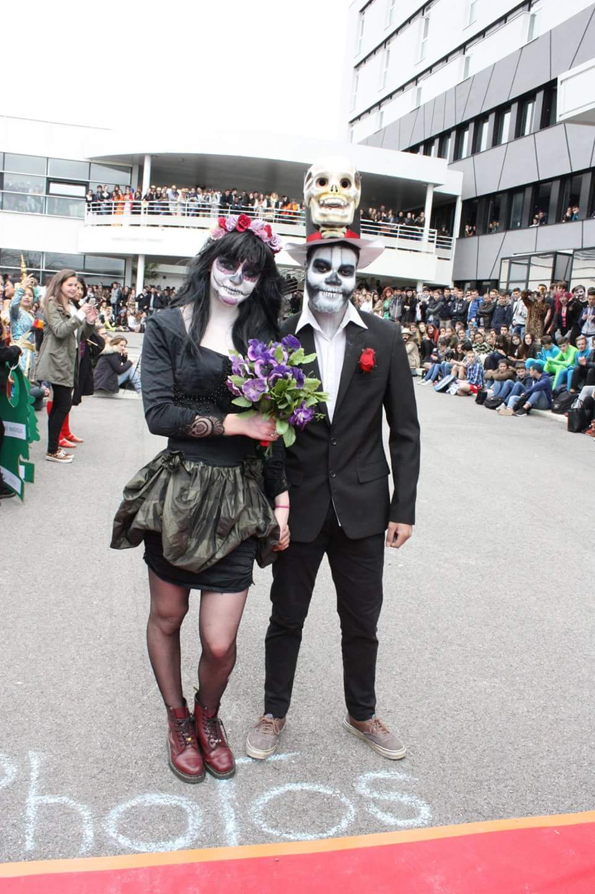

Formation
BTS SIO SLAM
Développement, API, base de données, cybersécurité, LinuxActuellement en alternance en tant que Conseiller Système d’Information / Développeur informatique à la direction régionale Carrefour, j'occupe un poste en tant que cadre de niveau 7, je développe des solutions concrètes autour du web, de l’automatisation, de l’environnement poste de travail et de l’accompagnement utilisateur, d'accompagnement des franchisés magasin. Mon objectif est de poursuivre dans une trajectoire Full-Stack en construisant des applications utiles, fiables et bien pensées.
BTS SIO SLAM
Développement, API, base de données, cybersécurité, LinuxCarrefour - CSI / Développeuse
Automatisation, sites web, support, projets nationauxApplication de gestion de frais
Web + mobile, API REST PHP, MySQL, AndroidDevenir développeuse Full-Stack
Avec une forte base projet et une vraie culture terrainCurieux, impliqué et orienté résultat, j’aime transformer une idée en solution concrète. Mon portfolio reflète à la fois mon profil technique, ma progression en BTS SIO et ma capacité à évoluer dans des contextes variés : développement, support, environnement système et projets d’entreprise.



J’ai une forte appétence pour l’informatique et tout particulièrement pour la construction d’interfaces, le développement d’applications et la résolution de problèmes concrets. Mon parcours m’a permis de croiser des sujets très différents : développement web, support utilisateur, réseau, déploiement poste de travail, automatisation JavaScript à l'aide de l'IA, coordination terrain et montée en responsabilité. En parallèle, le sport et mes centres d’intérêt m’ont appris la discipline, la rigueur, l’adaptabilité et l’esprit d’équipe.
Cette section croise mes compétences techniques, mes réalisations concrètes et les preuves attendues dans le cadre du BTS SIO. Chaque carte ouvre un détail plus complet de mes projets, méthodes et acquis.
HTML, CSS, JavaScript, PHP, MySQL
MVC, CRUD, responsive design
Conception de sites et d'interfaces
Gestion de frais web + mobile
API REST PHP, jeton, MySQL
Android Java / Volley

Linux Debian, Windows, VM
Support, diagnostic, cybersécurité
Réseau et continuité de service

Carrefour, SNCF, Darty
Support, projets, automatisation
Coordination et accompagnement
Figma, portfolio, sites web
Tests, déploiement, valorisation
Organisation et suivi projet
MOOC CNIL, veille technologique
Identité professionnelle
Progression continue
Mon parcours me permet d’articuler technique, terrain et sens du service. J’ai travaillé dans des environnements variés, avec des niveaux de responsabilité croissants.
Installation et configuration de postes informatiques, automatisation de tâches en JavaScript, participation à des projets informatiques à échelle régionale et nationale, formation d’utilisateurs, encadrement d’un stagiaire et contribution à l’évolution du poste CSI. Contexte à forte responsabilité, avec poste cadre niveau 7.
Gestion du réseau, suivi des anomalies et pannes, coordination avec les techniciens et les équipes SNCF pour les travaux programmés. Expérience structurante en supervision, incidents et continuité de service.
SAV, réception produit, gestion caisse via AS400 et réparation de produits. Une expérience orientée service, rigueur opérationnelle et traitement de demandes utilisateurs.
Découverte de Next.js et installation de l’environnement de travail. Première immersion structurée dans un environnement de développement concret.
Mes expériences en imprimerie, station nautique et contexte client SNCF ont renforcé ma capacité d’adaptation, mon sens du contact et mon autonomie, qui sont aujourd’hui de vrais atouts dans les projets informatiques.
Cette partie traduit directement les compétences du référentiel en réalisations concrètes. Elle permet de relier mes projets, mon alternance et mes productions à des compétences clairement identifiables dans le tableau de synthèse.
Réalisation d’une application de gestion des frais avec une partie web et une partie mobile. Le projet mobilise API REST en PHP, système d’authentification par jeton, connexion Android en Java via Volley, base MySQL, gestion des droits et tests d’intégration.
L’alternance illustre très concrètement les compétences du référentiel : déploiement, automatisation, accompagnement utilisateur, organisation projet, évolution d’outils internes, traitement de problématiques métiers et transmission de connaissances.
Une base technique construite à la fois en formation, en projet et en entreprise.
Le développement web constitue le cœur de mon profil. Pendant mon BTS SIO et mes projets personnels, j’ai développé des interfaces en HTML, CSS et JavaScript, conçu des pages dynamiques en PHP, manipulé des bases MySQL et appliqué les méthodes CRUD et MVC. Cette compétence s’exprime à travers mon portfolio, mes projets d’application et les travaux réalisés pendant ma formation.
Création d’interfaces claires, structurées, responsives et cohérentes avec un besoin utilisateur.
Manipulation de données, architecture PHP, échanges avec base MySQL et logique métier.
Organisation de code, lisibilité, amélioration progressive et validation fonctionnelle.

Maquette et conception orientée expérience utilisateur

Création d’interface web thématique

Travail de structuration visuelle et développement